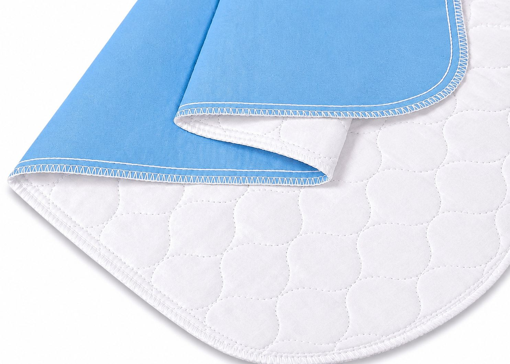

Saugleistung, die ins Datenblatt passt
„Super saugfähig“ sagt einem Einkäufer wenig. Wir veröffentlichen Zielwerte je Stufe, Prüfmethoden und Daten zur Waschbeständigkeit, damit Sie Unterlagen anhand von Fakten vergleichen können.

Drei Saugstufen
Das Aufnahmevermögen steigt mit Kerngewicht und Fläche. Angaben für eine Unterlage von 34 × 36 in (86 × 91 cm).
≈ 200 ml / 7 oz
Möbel, Reisen, Wickeln, leichte Blasenschwäche. Trocknet am schnellsten.
≈ 300 ml / 10 oz
Nächtliche Bettnutzung, bettnässende Kinder, ältere Haustiere. Bestes Preis-Leistungs-Verhältnis.
≈ 500 ml / 17 oz
Starke Inkontinenz in der Nacht, Bettlägerigkeit, Großwäscherei.
Was wir prüfen und wie
| Eigenschaft | Methode (Referenz) | Warum es wichtig ist |
|---|---|---|
| Aufnahmevermögen | 0,9 %ige Kochsalzlösung bis zum Ablaufen aufgießen, wiegen (angelehnt an EDANA-NWSP-Saugmethoden) | Wie viel eine Unterlage hält, bevor sie überläuft |
| Durchschlagzeit | Zeit, bis eine festgelegte Menge die Oberlage durchdringt (Prinzip NWSP 070.3) | Wie schnell sich die Haut wieder trocken anfühlt |
| Rücknässe | Filterpapier unter Last nach Sättigung, Gewichtszunahme gemessen | Vom Nutzer gefühlte Feuchtigkeit |
| Wasserdichtheit | Wassersäule (ISO 811 / AATCC 127) | Kein Durchdringen unter Körpergewicht |
| Waschbeständigkeit | Wiederholte Haushaltswäsche (ISO 6330), danach erneute Prüfung von Aufnahmevermögen und Wassersäule nach 50 / 100 / 300 Zyklen | Leistung nach monatelangem Gebrauch |
| Maßbeständigkeit | ISO 5077 nach Waschen und Trocknen | Keine Bewertungen wie „im Trockner eingelaufen“ |
| Farbechtheit | ISO 105-C06 (Wäsche), ISO 105-E04 (Schweiß) | Kein Abfärben auf Laken oder Haut |
Erhalt von Wasserdichtheit und Saugleistung über die Waschzyklen
Abnahmeziele für die Standardstufe. Aufnahmevermögen in % des Neuzustands.
Zielwerte, nach denen jedes Los freigegeben wird. Die tatsächlichen Ergebnisse stehen im Prüfbericht des Loses.
Warum „300 Wäschen“ glaubwürdig ist
Die meisten waschbaren Unterlagen versagen an der Sperrschicht, nicht am Kern: Eine dünne PU-Beschichtung reißt nach wiederholtem heißem Trocknen. Eine kaschierte TPU-Folie ist mit dem Strickstoff verbunden und biegt sich mit, statt zu reißen.
Wir prüfen die Wassersäule erneut nach 50, 100 und 300 Zyklen nach ISO 6330. Ein Los wird nur freigegeben, wenn es nach dem letzten Zyklus noch besteht.
PflegehinweiseBereit für Ihre eigene Linie waschbarer Unterlagen?
Nennen Sie uns Markt, Größen und Mengen. Innerhalb eines Werktags erhalten Sie Datenblatt und Staffelpreise.